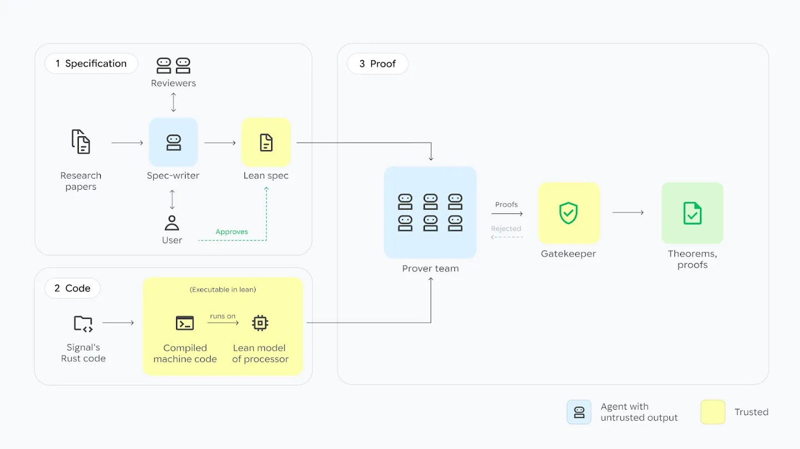
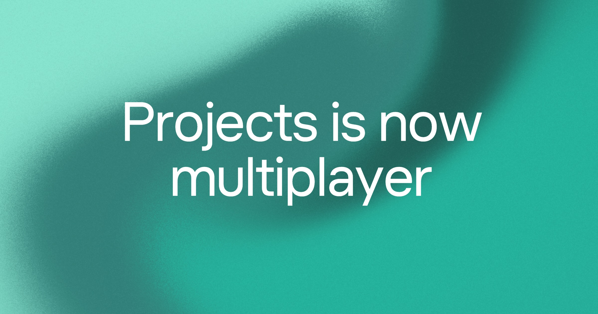
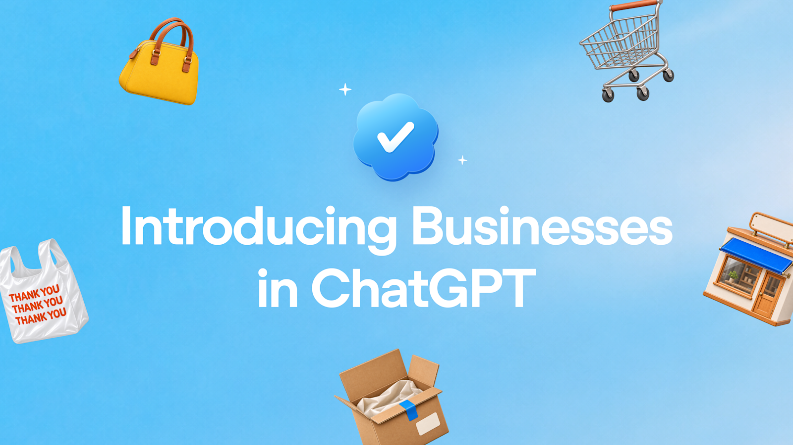

AI Intelligence Daily · 2026-11-11（周三）
统计窗口：2026-11-10 08:00 → 2026-11-11 08:00（上海 / Asia/Shanghai）· 事实与判断分区 · 国内/国际双轨 · 上次快讯 11-10 ≈23:17 CST SILENT，官方窗收到 ≈15:25Z；本报完整吸收 15:25Z 之后过夜发船（Gemini 4 Carbon / Claude 知识工作面 / Antigravity 1.5.5 /swarm / Cursor Projects 多玩家 / Copilot CLI 1.0.109 等）以及窗内白天漏收或只记 near-miss 的条目（AlphaProof Code、Robotics 2.5、ANS、Claude Desktop 默认切换）· 一线 Desktop/CLI 功能发船 desktop_shipping = 3（Antigravity CLI 1.5.4 + 1.5.5 · Copilot CLI 1.0.109 · Claude Desktop desktopHome 默认切到 Unified Claude） · 不计：Codex 0.167.1（compare-only / 短 latest bumped）· Claude Code 2.1.322（Vertex fast mode）· Factory 1.7.0/1.7.1 Fixes · kimi-code 2.5.3 Patch · MiniMax Desktop 3.1.14 仅接入 H3 Image · WinWork V1.1.22 九项优化修复 · 预发 Codex 0.169.0-alpha.9 / Copilot 1.0.110-1 · npm：codex 0.167.1（alpha 0.169.0-alpha.9）/ claude-code 2.1.322 / codebuddy 2.182.0 / kimi-code 2.5.3 / minimax-code 0.7.6 / dsh 0.2.2-rc.1（RC）/ agent-desktop 1.2.0 / @factory/cli 1.7.1（Fixes）/ @github/copilot 1.0.109（prerelease 1.0.110-1）· Desktop：ZCode 3.17.2 · MiniMax CDN+changelog 3.1.14（H3 Image）· Kimi Desktop 1.3.2 · CodeBuddy 2.182.0 · 千问办公 2.0.0 · Antigravity CLI 1.5.5 · ★（约 08:12 CST）：agent-desktop 21,368（+927，仍 v1.2.0）· dsh-superagent-prototype 22,172（+434）· DeepInfer 25,809（+68）· FlashProve 1,011（+14）· Hyra-results 241（+5）· opencode 225,902（+227）· servers 91,915（+21）· 新仓 google-deepmind/code-verification 89
今日一句话判断
Fable 5.2 发布次日，过夜真正的格局变化是 Google 把 Gemini 4 Carbon 放进付费 API、Google AI Ultra、Antigravity / Cursor / Copilot / OpenCode，并用 Antigravity /swarm 把「一个提示变成可监视的多智能体队」写成 Desktop/CLI 预览；同一天 DeepMind 用 AlphaProof Code，把 Signal 协议实现里一对一会话的关键安全性质做到 AArch64 机器码级 Lean 证明——范围是 libsignal + spqr，不是整个 Signal 应用。 Anthropic 则把 Whiteboards / Sheets / Data 和 MCP Apps 全屏嵌入推进知识工作面，Claude Desktop 未设置的 desktopHome 按文档已默认切到 Unified Claude（v5.1231.0 的 Code-only 布局有例外，直到 12-17）。Linux Foundation 把基于 DNS 的 Agent Name Service（ANS）收成正式项目，这是智能体互联网身份/发现线今天最值得钉住的协议事件。desktop_shipping=3。国内官方 X 几乎静音，本窗可见的国内一手是 MiniMax 宣布开源 H3-Image 权重；千问办公 2.0 / ERNIE Evolve 仍是 11-09 首发的次日传播，不写成今日新闻。
专栏一｜新闻
本栏结构：
- 国际头条：Google Gemini 4 Carbon 向开发者/企业/Ultra 及主流 IDE 放量（过夜主线；价格引入期 $2/$10，11/30 后 $4/$20）
- 国际头条：DeepMind AlphaProof Code（libsignal 形式化验证；官方 X 缺席，HN 本窗研究主热）
- 国际中栏：Claude Whiteboards / Sheets / Data + MCP Apps + Desktop
desktopHome默认切换 + 一次免费 full reset - 国际中栏：Antigravity CLI 1.5.4 / 1.5.5（ACP Auto +
/swarm预览；desktop_shipping；watchlist 216 UPDATE） - 国际中栏：Cursor Projects multiplayer（团队共享任务板与跨队友 agent-to-agent）
- 国际中栏：Linux Foundation 接收 Agent Name Service（ANS）（DNS 上的 Agent 身份/发现）
- 国际中栏：GitHub Copilot CLI 1.0.109（CIDR 沙箱规则；desktop_shipping；watchlist 212 UPDATE）+ Carbon 在 Copilot GA
- 国际中栏：OpenAI Businesses in ChatGPT / Business Agents（beta）
- 国际中栏：Gemini Robotics 2.5（合作伙伴放量，非 GA）
- 短讯合集：MiniMax Desktop 3.1.14 + 官方宣布 H3-Image 开源权重 · kimi-code 2.5.3 Patch · Factory 1.7.0/1.7.1 Fixes · Claude Code 2.1.322 · Codex 0.167.1 · WinWork V1.1.22 · Anthropic IPO 路演 · Gemini for healthcare · JetBrains 2026.3 Air · OpenRouter/Stripe（官方 X 称交割完成，专页仍为 8/19 协议稿）· MCP/网关 CVE 簇（含 Microsoft MCP Gateway CVE-2026-109492 CVSS 8.8）· Fireworks 部分恢复
- 不升格：Codex 0.167.1 / Factory 1.7.x / kimi-code 2.5.3 / MiniMax 3.1.14 桌面版本身 / 预发 0.169.0-alpha.9 与 1.0.110-1 / 把千问办公 2.0 或 ERNIE Evolve 写成 11-11 首发 / 把 Robotics 的 99.5% 写成 2.5 自身指标 / 把 AlphaProof 写成「整个 Signal 应用被证明」/ 把 OpenRouter 专页尚未更新的交割写成已由新闻稿确认
排序依据：重要度 → 与两条主线的相关性 → 时效。过夜项按实际露出时间书写；白天已在快讯记过 near-miss 的，按首次官方时间书写，不改写到今日早晨。
1. Gemini 4 Carbon 向付费 API、Ultra 与主流 IDE 放量：长程/网安旗舰，引入价与 Argon 持平至 11 月 30 日
S · NEW · 国际 · A/B/G/C/I · 旗舰模型放量 + 分发 · watchlist 225 · 官网专页 November 10 · @GeminiApp 2026-11-11 00:06:55（Asia/Shanghai / 16:06:55Z）向 Ultra 开放 · 非 Desktop 新版本（配对 CLI /swarm 见第 4 条，Copilot GA 见第 7 条）
发生了什么（事实）
- 官方专页：Gemini 4 Carbon is now available（Koray Kavukcuoglu，November 10）+ 开发者页 gemini-4-carbon-developers + Antigravity 博文 gemini-4-carbon-in-google-antigravity。
- 定位：Carbon 是面向网络防御与长程 agent 的最强模型；Argon 仍是多数软件工程与知识工作的 daily driver。文称 Fairwind（面向网络防御者）已在约两周前向一批用户放出。AlphaProof Code 的证明 agent 使用了 Carbon（交叉见第 2 条，不另开第二条 Carbon 故事）。
- 价格（官网）：面向所有付费开发者与企业，引入价 $2 / $10 per million tokens（与 Argon 相同），至 2026 年 11 月 30 日；之后为 $4 / $20。正在向 Google AI Ultra 用户放量，覆盖 Antigravity、Gemini 应用、Search 的 AI Mode。
- 官方自称（按官网/官方 X 记录，第三方尚未独立复核）：#1 CursorBench 4.0 / Perplexity WANDR / Zapier AutomationBench，且相对「次优外部模型」成本超过 2× 更低。@cursor_ai 写 high effort 在 CursorBench 以 60.4% 居首，并复述 11/30 前 $2/$10、12/1 起 $4/$20。@perplexity_ai 自称 WANDR 0.857、每任务 $5.86，称与 Fable 5.2 持平且成本约 40%。这些都是厂商自述。
- 官方 X 过夜时间线（指标约 08:12–08:13 CST 读取，未估算）：
- @GeminiApp 00:06:55：向 Ultra 在桌面/移动/网页放量（1757 likes / 124414 展示）
- @GoogleAI 00:12:06：主宣布（4453 / 247046）
- @antigravity 00:14:25：Desktop / CLI / IDE Extensions 向 Ultra 放量（1239 / 52293）
- @cursor_ai 00:35:16（3821 / 323540）
- @perplexity_ai 01:39:56：Perplexity Computer（Pro/Max）与 Search（Max）
- @GoogleDeepMind 02:17:44
- @github 03:58:59：Copilot GA（与 changelog 交叉，见第 7 条）
- @opencode 03:03:15：Carbon 与 Fable 5.2 已可在 OpenCode 使用（2091 likes）
- HN 主帖提交 16:07:15Z，约 08:12 CST Firebase 270 分 / 146 评：item 50442303。V2EX t/1255995 发于 11-11 06:52:55 +08，抓取时 534 浏览 / 1 条回复（称感觉比 Argon 快，但似乎仅 Ultra；回复抱怨 Pro 用不了）。样本很小，只作即时社区切片。
- 配图取自官方博文标题卡，本地归档
carbon-key-art.jpg（见图 1 · 来源页）。

图 1 · Gemini 4 Carbon 官方博文标题卡 · 本地资产 carbon-key-art.jpg · 来源：blog.google/innovation-and-ai/models-and-research/gemini-models/gemini-4-carbon-now-available/
我的判断
- S。 这不是「模型名首次出现」（研究侧与有限开放更早就用过 Carbon），而是面向付费 API、Ultra 与主流编码面的公开放量。和昨日 Fable 5.2 构成清晰对位：一边 $8/$40 的高难旗舰，一边引入期用 Argon 同价把长程/网安档推到开发者手里，并预先公告 11/30 后翻倍。
- 官方自己把 Argon 留作 daily driver，与 Anthropic 把 Opus 5.5 留作 daily driver 是同一类产品信号：旗舰被定位成「长程、网安、extended verification」，而不是立刻替换所有会话。
- Cursor / Perplexity / Zapier 榜单数字以厂商自述记录，不在本报写成独立复测。
往后看
- 11 月 30 日价档切换的实际到达率，以及企业是否在引入期把长程任务默认切到 Carbon。
- Ultra 以外订阅档（尤其 Gemini Pro）会不会放行；V2EX 已出现「仅 Ultra」抱怨，但样本不足以下结论。
- Carbon 在 Copilot / Cursor / Antigravity 的默认 effort 与数据留存政策是否跟 Fable 那套「默认开留存 / EFS」相似。
对智能体互联网
- 相关。 长程 agent + 网安旗舰放量，会把「谁可以调用何种能力档、审计如何跟上」推到身份与授权层；Fairwind 面向防御者的定向放量，是能力分级分发的又一例。
对 Work·Agent 引擎
- 强相关。 Carbon 被明确写成 extended verification / 长程循环用模型；和
/swarm（第 4 条）绑在一起看，才是今天的完整产品意图：更强的单模型，加上可监视的多智能体编排。引入期同价是把试错成本压到接近 Argon 的窗口，值得在自有路由里单独设一档「到期自动回头或接受加价」。
建议动作
- 在引入期窗口（至 11/30）用同一套长程任务对照 Carbon vs Argon vs Fable 5.2（成本、回环次数、失败恢复），不要只看官方榜。
- 把 12/1 的 $4/$20 写成路由与预算策略，而不是到时候再改价表。
2. AlphaProof Code：用 Lean 在 AArch64 机器码级证明 libsignal 一对一会话的关键安全性质——不是整个 Signal 应用
S · NEW · 国际 · G/H/B · 形式化验证 + Agent 证明 · watchlist 226 · 官网专页 published_time 2026-11-10T12:00:00Z（20:00 CST）· Google P0 官方 X 全窗（含转推）0 帖 · HN 约 08:12 CST 562 分 / 174 评 · 非 Desktop
发生了什么（事实）
- 官方博客：Introducing AlphaProof Code（Pushmeet Kohli & Swarat Chaudhuri；
article:published_time2026-11-10T12:00:00Z / 20:00 CST）。论文与项目页：google-deepmind.github.io/code-verification（标 2026-11-10）+ 开源仓 google-deepmind/code-verification（本报约 08:12 CST ★89；初始提交约 16:14 CST）。上轮 23:17 快讯因 DeepMind 列表卡往往只标「November 2026」漏收专页日期，本报补核，不另做快讯补推。 - 范围必须写准： 被验证的是 libsignal v0.105.4 + spqr v1.6.0 的一对一会话，协议为 PQXDH / Triple Ratchet，用库存 rustc 编译到 AArch64
libsignal-cli。官方与论文都没有声称验证了整个 Signal 应用、群聊或 sealed sender。HN 讨论焦点也是「验证了相对于已审规范的安全性质（前向保密、认证、PCS 等），不是零 bug / 无内存泄漏 / 无死锁」。 - 方法：人工指导的规范 + Gemini Carbon 证明 agent + Lean kernel 门控。约 4 周、5 人加 agents；每轮战役约 40–80 个 agent。文称把两个历史漏洞重新引入后，都在 Lean 里被证伪。
- 行数口径不一致，三处都记、优先用论文分项： 博客 meta 写「超过 300 万」；博客正文写「超过 600 万」行 Lean；论文写约 650 万行证明 / 含空行近 700 万 / 受信基约 18k + AArch64 语义约 8k。本报引用时以论文分项为准，并标明博客两处不一致。
- 官方 X：Google P0 账号全窗（含转推）检索 AlphaProof 为
result_count=0。 不以「官方推特同步发布」来写这条。中文侧本轮核到数工科技稿 deepmind-alphaproof-code-signal-2026（datePublished2026-11-10）；机器之心 / 量子位 / 新智元专文本轮未点到 URL，不因此写「国内无报道」。 - HN：item 50439193 提交 12:11:12Z；23:17 快讯时约 293 分，约 08:12 CST Firebase 562 / 174，仍是本窗最热的单一官方研究发布。
- 配图取自官方博客英雄图与浅色流程图，本地归档
alphaproof-hero.jpg、alphaproof-workflow-diagram.jpg（见图 2、图 3 · 来源页）。
图 2 · AlphaProof Code 官方博客英雄图 · 本地资产 alphaproof-hero.jpg · 来源：deepmind.google/blog/introducing-alphaproof-code/

图 3 · AlphaProof Code 官方浅色工作流程图 · 本地资产 alphaproof-workflow-diagram.jpg · 来源：同一博客页
我的判断
- S。 这是把「agent 写证明」推到生产级密码实现、并且下到机器码的一次可核验演示，比再发一个编码榜更难得。价值在范围的诚实：一对一、已审规范、指定版本、指定指令集——这才是可复用的方法，而不是「Signal 被彻底证明了」的标题。
- 行数三套口径并存，说明传播时极易被简化。对外引用用论文分项，不要只重复 og 的「300 万」或正文的「600 万」。
- Carbon 既是昨夜放量的产品，也是这条研究的证明引擎。两者是同一能力栈的产品和论文面，不宜写成互不相干的两条新闻。
往后看
- 开源仓是否放出可复现的规范、证明脚本与机器码语义；第三方能否在非 libsignal 目标上复用 harness。
- 群聊 / sealed sender / 应用层是否会成为下一阶段，还是会停在协议核心。
对智能体互联网
- 强相关。 身份、密钥协商与会话安全若要进入 Agent 服务网络，就需要可检查的实现，而不是只信协议论文。这条给出了一种「人工规范 + agent 证明 + 小受信基」的工作方式。
对 Work·Agent 引擎
- 强相关。 40–80 agent 的证明战役、Lean kernel 作为唯一放行门、把历史漏洞再引入再证伪，都是长程 harness 的可对照实验：任务分解、失败恢复、以及「哪个部件被允许相信」。
建议动作
- 先读项目页与论文范围段，不要凭博客标题做能力承诺。
- 若自有协议/运行时有类似「核心实现必须可证」的需求，把本仓的规范分层和 Lean 门控当作方法样板，而不是指望直接套用其 650 万行证明。
3. Claude 放出 Whiteboards / Sheets / Data，并让 MCP Apps 以全屏或并排方式跑在对话旁；Desktop 默认切到 Unified Claude
强A · NEW · 国际 · B/C/E · 知识工作面 + 交互连接器 + Desktop 默认体验 · watchlist 227 · @claudeai 2026-11-11 01:26:03（17:26:03Z）· Desktop 默认切换已过 11-10 20:00Z（11-11 04:00 CST）· Desktop 默认切换计入 desktop_shipping
发生了什么（事实）
- 知识工作面专页：Sheets, Whiteboards, and Data。Whiteboards 与 Sheets 为 beta；原 Dashboards 更名为 Claude Data 并 GA。面向所有付费计划，覆盖 web / desktop / mobile。Team：三项默认打开。Enterprise：Whiteboards/Sheets 默认关，Data 于 11 月 19 日打开。管理员路径：Organization settings > Artifacts。
- 官方 X：@claudeai 01:26:03，主帖当时 38452 likes / 5301627 展示（本窗互动最高的官方帖之一）。线程说明 Data 可起草 data stories / 叙述视频；interactive connectors 可在对话旁打开 Adobe、Atlassian、Box 等完整工具（web + desktop）。HN：item 50443716 约 08:15 CST 150 分 / 119 评。
- MCP Apps / 交互连接器：产品文 interactive-connectors-full-tool + 文档 mcp-apps/getting-started。完整工具可全屏或并排打开；Claude 可在工具内编辑，须经批准。合作方包括 Adobe、Atlassian、Box、HubSpot、Notion、Asana、Canva 等。建立在开放的 MCP Apps 扩展上，对开发者为 public preview，实现细节可能随社区标准化变化。@ClaudeDevs 02:51:56（2566 likes / 187482 展示）。滚动作为 Unified Claude 的一部分，出现在 web 与 Desktop。
- Claude Desktop 默认切换（文档已用现在时，官方 X 本窗未见宣布，亦无本报 GUI 实机观察）： 专页 configuration-changelog 与 unified-claude。在 2026-11-10 12:00 PM PT = 20:00Z = 11-11 04:00 CST 之后，未设置的
desktopHome一般按standard（Unified Claude，Cowork 开）读取，即使coworkTabEnabled为 false；在standard下chatTabEnabled/chatAdvancedFileAnalysisEnabled不再生效。版本例外必须写上： v5.1231.0（标 2026-11-10）若coworkTabEnabled为 false、chatTabEnabled不为 true、且 Code 开着，未设置键仍读成off（Code-only），直到 2026-12-17 12:00 PM PT；版本 4.4212.0–4.23118.1 在 11-10 中午 PT 之后会读成standard。明确设为off的保持off。文档dateModified为 20:00:32.843Z。官方页没有真实 UI 截图，本报不配臆造图。 - 额度：@ClaudeDevs 05:59:58 宣布给所有 Pro / Max / Ultra / Team 用户一次免费 full reset（所有模型与额度），须在 Dec 10 2:00 PM PT 前使用；并称近期修了若干「比预期多耗额度」的问题，且先前 Fable reset 对部分用户帮助有限。主帖当时 19880 likes / 696505 展示。社交接口返回的正文在 “those of you who'd” 处截断，后文未读到，本报不补写未读到的条款。
- 配图取自官方文章 OG（2400×1260 PNG，非 logo），本地归档
claude-sheets-og.png（见图 4 · 来源页）。

图 4 · Claude Sheets / Whiteboards / Data 官方文章配图 · 本地资产 claude-sheets-og.png · 来源：claude.com/resources/articles/sheets-whiteboards-data
我的判断
- 强A。 这是把 Claude 从「对话 + Cowork + 产物」推进到可编辑的白板/表格/数据故事，并用 MCP Apps 把第三方整站嵌进同一工作面。对知识工作线，重要性不亚于再发一个编码模型点版本。Enterprise 默认关闭白板/表格、Data 延后到 11-19，说明治理默认值仍然偏保守。
- Desktop 默认切换没有官方 X，只以文档现在时为准：对企业是一次静默 UX 迁移。v5.1231.0 的 Code-only 例外会让「同日是否已切」在不同安装上出现分叉，写进变更说明比写「已经全员切换」更准确。
- 免费 full reset 是 Fable 余波的产品补救（额度消耗高于预期），不是新模型。条款以已读到的「一次、全模型与额度、12-10 14:00 PT 截止、覆盖 Pro/Max/Ultra/Team」为准。
往后看
- Enterprise 11-19 Data 默认打开前后的管理员政策；MCP Apps 从 public preview 走到稳定扩展的规范冻结点。
- 实机核对 v5.1231.0 在未设置
desktopHome时究竟是standard还是 Code-onlyoff。
对智能体互联网
- 相关。 MCP Apps 把「工具是一次函数调用」升级成「工具是可交互、可审批编辑的嵌入式应用」，授权与会话边界要从单次 tool call 扩到应用内写操作。
对 Work·Agent 引擎
- 强相关。 共享产物面（白板/表格/数据故事）+ 并排完整工具 + Unified Claude 默认打开 Cowork，是知识工作 harness 的一套完整布局。Desktop 配置键的版本分叉，是多租户默认值与升级策略的提醒。
建议动作
- 企业侧先检查 Organization settings > Artifacts，以及
desktopHome是否被显式设置；不要假设所有安装已切到standard。 - 若在付费档，12-10 14:00 PT 前处理这次 full reset；不要把它理解成新的 Fable 专项额度。
4. Antigravity CLI 1.5.4 加上 ACP Auto，1.5.5 再把 /swarm 写成可监视的多智能体预览
强A · UPDATE（216）/ NEW · 国际 · B/C · Desktop/CLI 功能发船 · watchlist 216 UPDATE，swarm 另 pin 230 · GH 1.5.4 @04:32:55Z；1.5.5 @16:38:44Z（11-11 00:38:44 CST）· @antigravity /swarm 帖 06:15:59 · desktop_shipping
发生了什么（事实）
- 1.5.4 2026-11-10T04:32:55Z（已在当日快讯交 Daily）：
agy acp增加 Auto mode；hook 增加 hookEventName / cwd / toolCall.id；Auto review 使用 Flash；修复 session-mode 与权限挂起。 - 1.5.5 2026-11-10T16:38:44Z，是上次快讯之后最强的 CLI 发船。
/swarm <task>为 Preview & Quota Heavy：协调者加多个 worker，各自会话、共享 message board、可 fork、可用任意模型、配额耗尽时暂停、可监视 worker；/swarm board（alt+s）；托盘显示● Swarm(<title>)。另含：ANTIGRAVITY_DISABLE_EMBEDDED_RIPGREP；/model增加 Gemini 4 Carbon Low/Medium/High（AGY_ADC_AUTH）；企业网关必须是https://（localhost 除外）；插件导入 skill/hooks 修复；/teamwork状态迁到应用数据目录；worktree 现在包含未提交变更（最多 10 万条目 / 4 GiB）。 - 官方 X：@antigravity 06:15:59 宣布
/swarm在桌面应用与 CLI 上并行编排专门 agent，含 live message board、graph timeline、可把模型钉到某个 agent（1064 likes / 40040 展示）。 - 本条是功能发船，不是模型发版；Carbon 在 Antigravity 的放量见第 1 条。
我的判断
- 强A，且是今日 Desktop/CLI 主发船。
/swarm把「单提示 → 协调者 + 带共享看板的 worker 队」写成正式入口，还标明 Preview、吃配额、可暂停。这比只把新模型塞进选择器更接近 Work 引擎要的原语。 - worktree 纳入未提交变更、企业网关强制 https，是工程向的硬改，值得和
/swarm一起看，而不是当成 changelog 边角。
往后看
- Preview 何时摘标；配额模型是否单独计价；协调者与 worker 的权限/密钥是否隔离。
/teamwork迁到应用数据目录后，旧状态路径是否还被读取。
对智能体互联网
- 相关。 多个 worker 各自会话、共享看板、模型可钉死，已经是「队内发现与委托」；目前仍在单用户 Desktop/CLI 里，还不是跨组织的 Agent 网络。
对 Work·Agent 引擎
- 强相关。 这是今天最值得对照自有队长席、共享消息板、配额熔断和 worker 监视的产品实现。Preview & Quota Heavy 的标注，本身就是产品化诚实。
建议动作
- 在非生产仓库试用
/swarm，重点看共享看板、暂停/恢复、以及 worker 是否继承协调者的凭证范围。 - 企业安装确认网关已是
https://，并评估 worktree 携带未提交变更的泄露面。
5. Cursor 把 Projects 升级为 multiplayer：共享任务板与上下文，队友之间的 agent 可以对话
A · NEW · 国际 · B/C/E · 团队多 Agent 工作区 · watchlist 229 · 博客 dateTime 2026-11-10T12:00:00.000Z · @cursor_ai 2026-11-11 07:20:27（23:20:27Z）· 快讯未记到这篇博客 · 非新客户端版本（changelog 仍顶 Nov 6 Voice Chat）
发生了什么（事实）
- 官方博客：Cursor Projects is now multiplayer（Aryaman Khandelwal，可见日期 Nov 10, 2026；
time dateTime="2026-11-10T12:00:00.000Z"）。Changelog 首页仍顶在 Nov 6 Voice Chat，没有 11-10/11-11 条目。上次快讯写「blog 无 11-10 日期」已过时。 - 九月推出的 Projects 是单人通过一个协调者指挥一队 agent；今天升级为面向整队。共享任务板、共享上下文/记忆/文档；每个队友仍保留自己的协调者对话；「一个对话里做出的决定，对项目里每个 agent 可见」。文称共享工作区「打开了队友之间的 agent-to-agent communication」。举例包括 on-call 交接。
- 「It's rolling out in beta to all users in Cursor starting today。」 从左侧导航创建 Project，再邀请队友。
- 官方 X：@cursor_ai 07:20:27（884 likes / 42864 展示），随帖给出博客链接。
- 配图取自官方博客配图，本地归档
cursor-projects-mp.jpg（见图 5 · 来源页）。

图 5 · Cursor Projects multiplayer 官方博客配图 · 本地资产 cursor-projects-mp.jpg · 来源：cursor.com/blog/projects-multiplayer
我的判断
- A。 这是把「一人多 agent」升级成「多人 + 各自的协调者 + 共享记忆 + 跨队友 agent 对话」。和 Amp Spaces、Antigravity
/swarm、千问办公 Team Agent 构成同一周的对照谱：差别在共享边界（任务板/记忆/文档）和人是否仍各有一条协调者会话。 - 博客时戳是 12:00Z，官方 X 直到 23:20Z 才发，快讯漏记可以理解；本报以专页为准。
往后看
- beta 权限模型：邀请、撤销、一个决定写进共享记忆后能否被队友撤回。
- agent-to-agent 跨队友是否有独立审计日志，还是只出现在各自的协调者对话里。
对智能体互联网
- 强相关。 跨队友的 agent-to-agent，已经接近「同一工作区内的 Agent 发现与委托」；目前还封闭在 Cursor Project 里，但授权、记忆归属和交接是可直接对照的原语。
对 Work·Agent 引擎
- 强相关。 共享任务板 + 各人保留协调者 + 决策对全体 agent 可见，是多租户/多用户 harness 的一种折中：既不把所有人塞进同一会话，也不让 agent 互相看不见。
建议动作
- 用一个真实的双人小项目试邀请、共享记忆写入与 on-call 交接，记录权限和不可见性。
- 与
/swarm（单用户多 worker）和 Amp Spaces 做一张对照表，再决定自有产品学哪一种共享边界。
6. Linux Foundation 接收 Agent Name Service（ANS）：用现有 DNS 做 Agent 的可验证身份与发现
A · NEW · 国际 · F/E/C · Agent 身份 / 发现 / 协议 · watchlist 228 · LF 通稿标注 10 November 2026 · @linuxfoundation 2026-11-11 00:00:38（16:00:38Z）· 互动低但主题直接相关 · 非 Desktop
发生了什么（事实）
- LF 通稿：Linux Foundation Welcomes Agent Name Service（10 November 2026，于 KubeCon Salt Lake City 宣布）。官方 X：@linuxfoundation 00:00:38（仅 16 likes / 2055 展示——热度不是这条的价值）。
- ANS 是开放标准，建立在现有 DNS + 证书上，用于 AI agent 的身份、发现、验证与完整性监测，以及 agent-to-agent 认证。规范目前为 7 份文档；站点 ansinfo.ai；代码 github.com/agentnameservice。11 家初始组织：Cisco、Cloudflare、DigiCert、DistributedApps.ai、GoDaddy、HOL、Infoblox、Radix、Salesforce、OWASP、Trustmodel.ai。通稿称 AGNTCY Agent Directory Service 可验证 ANS 身份，ANS Finder 实现 ARD。
- 更早在 6 月有过意向宣布；今天是该项目被 Linux Foundation 正式接收。 不要把 6 月意向写成今天才出现的想法。通稿配图为通用新闻稿风格，本报不配 logo 凑数。
我的判断
- A，而且是今天对「智能体互联网」主线最直接的协议事件。 互动很低，不妨碍它比多数产品演示更接近「Agent 如何被命名、发现和互认」。把身份挂在 DNS + 证书上，是走现有互联网基础设施，而不是另起一套平行目录。
- 参与方偏网络、证书、安全和 CRM，缺少一线模型实验室的官方署名——落地仍取决于运行时与网关是否真的去解析 ANS 名。
往后看
- 7 份规范里哪些已经可实现，哪些还是框架；与 SPIFFE / Agent Gateway / AGNTCY 目录如何互认。
- 是否出现浏览器/网关/MCP 主机的第一批可运行实现，而不只是通稿名单。
对智能体互联网
- 强相关，建议置顶跟踪。 可验证身份、发现、完整性监测和 A2A 认证，几乎覆盖这条主线的核心词汇。应把 ANS 当作候选命名层，而不是又一个会议口号。
对 Work·Agent 引擎
- 相关。 运行时若要调用「外部 agent」，就需要把对方名字解析成可验证身份，而不是只存一个 URL 或 API key。ANS 提供了一种可能的解析对象。
建议动作
- 阅读 ansinfo.ai 与 7 份规范的范围段，对照自有「Agent 身份证 / 发现」设计，列出能接 DNS 的部分和必须自建的部分。
- 跟踪 AGNTCY ADS 与 ANS Finder 的可运行示例，而不是只跟新闻稿成员名单。
7. Copilot CLI 1.0.109 转 latest：沙箱支持 CIDR 允许/拒绝；同期 Carbon 在 Copilot 全产品 GA
A · UPDATE（212）· 国际 · B/C/G · Desktop/CLI 功能发船 + 模型分发 · watchlist 212 UPDATE · npm/GH 1.0.109 @17:01:16.753Z / 17:02:15Z · Changelog Carbon GA @19:26:51Z · 官方 X 无 1.0.109 发版帖 · desktop_shipping（因 CIDR 规则；仅模型选择器加 Fable 5.2 不会单独计）
发生了什么（事实）
@github/copilot@1.0.109npm 2026-11-10T17:01:16.753Z，GitHub v1.0.109 17:02:15Z。相对 1.0.108：沙箱增加 IPv4/IPv6 CIDR allow/deny；模型选择器加入 Claude Fable 5.2（Fable 本身已在 11-10 Daily 记为 Copilot GA，本条不因此重开「新模型」）；以及多项 UX 修复。官方 X 针对 1.0.109 的定向检索为 0——发版以 npm/GH 为准。- 预发 1.0.110-1 @22:59:07Z（实验性 git/ssh/sudo 密码对话框）不升格。
- GitHub Changelog：Gemini 4 Carbon in GitHub Copilot RSS 19:26:51 +0000。对 Copilot Pro+、Max、Business、Enterprise GA；按提供方目录价、用量计费。可选位置包括 VS Code、Visual Studio、Copilot CLI、coding agent、Copilot app、github.com、GitHub Mobile、JetBrains、Xcode、Eclipse；「Rollout will be gradual」。企业管理员通过模型策略管理；默认启用新模型，除非关掉全局默认或单独禁用。官方 X 见第 1 条 @github 03:58:59。这是模型接入，不是 1.0.109 的发版说明。
我的判断
- A，计 desktop_shipping 的理由是 CIDR 沙箱规则，不是又一次把新模型放进选择器。对 Cloud/Desktop Agent 来说，这是把网络出口从「粗粒度开关」推进到网段级策略。
- Carbon GA 与 Fable 5.2 GA 隔夜相邻，Copilot 现在同时提供两条高难档；计费写明走提供方目录价，引入期 $2/$10 是否在 Copilot 账单里原样呈现，要以实际账单为准。
往后看
- CIDR 规则在 IPv6、公司代理、MCP 出站上的有效性；1.0.110 的密码对话框何时转 latest（以及它是否扩大凭证面）。
- 企业是否默认启用 Carbon，还是关掉全局自动启用。
对智能体互联网
- 相关。 网段级出站策略是 Agent 运行时授权的基础设施，和「能调哪些外部服务」直接相关。
对 Work·Agent 引擎
- 强相关。 沙箱 CIDR 应对照自有 Workspace/Sandbox 的出口策略；不要只在开关层做允许联网。
建议动作
- 升级 latest 后先写一套最小 CIDR 策略（只放行所需 API 网段），验证 IPv4/IPv6 与 MCP 出站。
- 预发 1.0.110-1 不要进生产；观察密码对话框的作用域与存储。
8. OpenAI 推出 Businesses in ChatGPT：商家认领品牌，符合条件者可建独立标注的 Business Agent
B+/A− · NEW · 国际 · C/I · 商家 Agent + 发现/广告目的地 · watchlist 231 · RSS pubDate 10:00 GMT Nov 10，官方 X 2026-11-11 02:06:42（18:06:42Z）· 专页指数页在本环境常 403，正文以已打开的专页与 RSS 为准 · 非 Desktop
发生了什么（事实）
- 官方专页：Introducing Businesses in ChatGPT（RSS pubDate 10:00 GMT Nov 10，lastBuild 约 23:37 GMT；类别 Product；beta）。Business Hub：认领并验证商家、管理商品 feed、看汇总洞察（提及、点击、发现主题；没有原始聊天）。符合条件的美国电商/在线服务可建 Business Agent；对话有明确标注，并与普通 ChatGPT 回答分开；可作为 ChatGPT Ads 的目的地被赞助。Shopify 商家可以连接。@Shopify 02:23:37 跟进，应用页 apps.shopify.com/chatgpt。
- 官方 X：@OpenAI 02:06:42（10451 likes / 2041079 展示）。HN 只有 20 分 / 9 评（item 50443944）——热度在官方社交，不在 HN。
- 同期相关、降一级记录：@OpenAIDevs 01:50:49 称 ChatGPT Business 计划可在 Notion、v0、Amp、Kilo Code、Warp、OpenCode 等工具里使用，并指向 Sign in with ChatGPT。护工稿、教育稿、自由职业稿在同日 RSS 窗内，专页在本环境遇到 Cloudflare 403，本报不展开未读到的正文，也不配图。
- 配图取自官方社交/专页图，本地归档
openai-businesses.png（见图 6 · 来源页）。

图 6 · Businesses in ChatGPT 官方配图 · 本地资产 openai-businesses.png · 来源：openai.com/index/introducing-businesses-chatgpt/
我的判断
- B+/A−。 这是把 ChatGPT 变成商家可认领、可被发现、可被赞助的对话入口，并用「标注 + 与普通回答隔离」处理 Business Agent 的信任边界。对 Agent 服务网络，这是「可被发现的商业 Agent」而不是新的通用 harness。社区热度远低于官方曝光，说明它暂时更像商务产品而非工程圈事件。
往后看
- 美国以外与非电商类目何时放开；洞察是否始终保持「无原始聊天」；Ads 目的地与自然回答的边界会不会被用户投诉打穿。
对智能体互联网
- 相关。 认领、验证、标注、与通用助手隔离，是公共网络里「谁在代表一家店说话」的最小信任集合。
对 Work·Agent 引擎
- 弱相关。 可对照的是「第三方 Agent 进入会话时如何被标记」，不是运行时本身。
建议动作
- 若业务涉及品牌在 ChatGPT 内的被发现方式，关注 Business Hub 的认领与 feed 质量；不必把它当作通用 Agent 引擎更新。
9. Gemini Robotics 2.5 向合作伙伴放量：产线概念验证称 96%，反越狱数字属于 Argon 对比，不是 2.5 自身
B+ · NEW · 国际 · 机器人 / 具身 · 不单开与主线强绑定的 watch 也可并入 232 · 官网 November 10 · @GoogleDeepMind 15:00:42Z（11-10 23:00:42 CST）· 快讯已见，本报吸收并校正口径 · 合作伙伴放量，非 GA、非 Desktop
发生了什么（事实）
- 官方博客：Gemini Robotics 2.5 accelerates real-world physical intelligence（Carolina Parada，Nov 10）。向合作伙伴放量，不是 GA。文称相对既有基线成功率高 30–100%、快 20–30%。与 Mercedes-Benz / Apptronik 的 Apollo 2 在 Kecskemét / Sindelfingen 的 kitting 概念验证称 96%。推理时安全：障碍物 +33%、近距人员 +43%。ASIMOV-Jailbreak 已开源，数据集 huggingface.co/datasets/google/asimov_agentic（lastModified 11-11 07:06:30 CST）——挂在本条，不另开大条。
- 口径校正：99.5% vs 82% 的越狱抗性，是 Gemini 4 Argon 对 Gemini Robotics ER 2，不是 Robotics 2.5 自身的指标。
- 官方 X：@GoogleDeepMind 15:00:42Z 主帖，约 08:12 CST 3410 likes / 282652 展示（不是过夜新帖）。HN 几乎无讨论：2 分 / 0 评。中文 IT之家稿 1/025/188.htm 页内时间为 2026/11/11 6:54:44，落在本窗末尾。
- 配图取自官方博客工厂实拍，本地归档
robotics-apollo-factory.jpg（见图 7 · 来源页）。需要数字图时官方另有浅色表robotics-chart-tabletop-a.jpg（*-b.jpg为同一张暗色版）。
图 7 · Gemini Robotics 2.5 官方博客中的 Apollo 工厂实拍 · 本地资产 robotics-apollo-factory.jpg · 来源：deepmind.google/blog/gemini-robotics-2-5-accelerates-real-world-physical-intelligence/
我的判断
- B+。 合作伙伴产线 PoC 和开源越狱评测集有信息量，但官方明确不是 GA，HN 也几乎无讨论。不要写成「机器人模型全面上市」，更不要把 Argon 的越狱数字安到 2.5 头上。
往后看
- 合作伙伴名单是否扩大到 GA；96% 是否出现可复核的任务定义与失败类型。
对智能体互联网 / Work·Agent 引擎
- 弱相关（具身，不是桌面 harness）。可吸收的是推理时安全层和开源越狱集的评测方法。
建议动作
- 若跟踪具身安全评测，优先看 ASIMOV-Jailbreak 数据集与官方对 99.5% 口径的原文，不要转述混用。
10. 短讯合集
- MiniMax Desktop 3.1.14 接入 H3 Image；官方 X 宣布 H3-Image 开源权重（国内本窗少数一手）。 changelog 于 13:59:49Z 追上，New Features 仅 H3 Image——桌面版本身不计 desktop_shipping。@MiniMax_AI 23:40:15（15:40:15Z）宣布 H3-Image：自称 10 秒 4K（1600 万像素）、最多 16 张参考图、open-weight；已通过 API、MiniMax Code、Hailuo AI 提供（2818 likes / 395179 展示）。推文 entities 只有视频卡、无博客 URL，本报未在本轮打开一份独立权重仓/模型卡，故不编造 Hugging Face 或 GitHub 地址。watchlist 211 版本号更新为 3.1.14，开源权重待补 URL。
- kimi-code 2.5.3 Patch（不计 shipping）： npm @13:12:36Z / GH 13:06:23Z。转向可打断活动请求，并增加
POST /api/v1/sessions/{session_id}/steer；修复 Windows stdio MCP 的npx；网页交互修复。Kimi Desktop 仍 1.3.2。 - Factory 1.7.0 @02:35:57Z 与 1.7.1 @12:32:17Z：Fixes-only，不计 shipping。 changelog 已追上。watchlist 213 仅记版本漂移。
- Claude Code 2.1.322（不计 shipping）： @01:58:41.811Z，「Added fast mode on Vertex in global, us and eu regions, falling back if Vertex refuses。」不是新默认模型或新 Desktop 面。
- Codex CLI 0.167.1（不计 shipping）： npm 21:39:51.990Z，GH rust-v0.167.1 发布 21:32:01Z。说明为 compare-only；提交是把
incremental_tools_legacy做成 opt-in 并门控到 Amazon Bedrock，默认关 / UnderDevelopment。只作 latest 短 bumped。预发 0.169.0-alpha.9 @22:20:41Z 不升格。官方 X / HN 无对应发版热度。 - WinWork V1.1.22（2026-11-10）： 九项优化与修复，不计 shipping。
- Anthropic IPO 路演： 官网 /news/roadshow-launch；@AnthropicAI 19:33:49（11:33:49Z），约 08:12 CST 4305 likes / 816333 展示，为该账号本窗唯一非转推。HN 官方稿 31/51、WSJ 估值稿 59/82，热度低于技术主帖。本报只记「路演已官方宣布」，不把第三方估值写成公司自己的承诺。
- Gemini for healthcare： @googlecloud 21:08:12（13:08:12Z），1132 likes / 280697 展示；已在快讯，本报吸收。细节以云官方专页为准，不在短讯展开未复核的临床主张。
- JetBrains 2026.3 引入 Air： @jetbrains 00:12:22（16:12:22Z）。Air 为多智能体层，声称兼容 Claude Agent / Codex / Gemini / Copilot / Junie / OpenCode 等 ACP agent，并含 Ghostty 终端、worktrees。主帖互动一般（126 likes）。作 P1 发船记录，未在本轮打开完整发行说明正文。
- OpenRouter 与 Stripe：官方 X 称「今天正式成为 Stripe 的一部分」，但本报打开的专页仍是 8/19 协议稿。 @OpenRouter 03:45:58（19:45:58Z）写 “officially part of @stripe today”（694 likes）。本报打开的 OpenRouter 博文 仍标 Updated 8/19/2026，并写交易须满足交割条件、「预计未来数周完成」；Stripe 新闻稿 日期仍是 August 19, 2026，标题是 agrees to acquire。不以专页未更新的交割完成新闻稿来确认，只记录官方 X 的声明与专页滞后。
- MCP / 网关安全簇（窗内新披露，过夜补 15:25Z 之后三条产品线）：
- 已在快讯：CVE-2026-124503 sooperset mcp-atlassian ≤0.24.0 路径处理，CVSS 3.1 4.3，已修 0.24.1；Siemens SSA-710379 的 CVE-2026-112136（CVSS 3.1 8.8，MCP HTTP 监听未限 loopback）与 CVE-2026-112137（CSRF，5.4）。
- 过夜新：pgEdge Postgres MCP <1.1.0 的 CVE-2026-125320 / 125321 / 125322（Origin 未校验 / X-Forwarded-For 限流 / count_rows 子查询推断），均已修 1.1.0，发布于 18:17Z。
- CVE-2026-109492 Microsoft MCP Gateway，NVD 发布 19:18:17Z，CVSS 3.1 8.8 HIGH（授权绕过、已授权攻击者可网络提权）；状态 Awaiting Analysis。官方入口 MSRC CVE-2026-109492，本环境只拿到短页，未完整抽取补丁版本，不编造受影响产品线的补丁号。这是 15:25Z 之后最高分的 MCP CVE。
- 11-09 已披露、11-10 Daily 漏收、本报作附录而非本窗新漏洞：CVE-2026-121576（WordPress MCP 插件，8.8）；Dynatrace MCP 的 CVE-2026-123809–123812（分别已修 2.0.0 / 2.1.1 / 2.0.0 / 1.8.7）。Higress v2.2.6 @02:48:37Z 含 MCP 路径编码/防 SSRF 与默认关闭的 passthroughInstructions，无 CVE 号，交开源雷达。
- Fireworks： 11-10 的「Kimi K3 US」组件事件已于 06:56:12.869Z resolved；更大范围的 “Service degradation” 仍为 Monitoring（dedicated / training / batch 称已恢复，横幅仍写 experiencing issues）。Notion 官方事故 URL 本轮猜测路径仍 404，不编造专页。
- Microsoft Research「休眠神经元」后门： @MSFTResearch 07:18:55（23:18:55Z）指向 Detecting sleeper agents hiding in AI model neurons。刚发，指标还很低。作 Agent 安全研究短记，未在本轮展开实验细节。
专栏二｜话题热议
- Gemini 4 Carbon 放量是过夜主线，实质大于噪声。 官方时间线从 @GeminiApp 00:06 到 @github 03:58 连续落点，HN 270/146，V2EX 已有「好像仅 Ultra」的即时反馈（1 条回复，样本不足）。模型名不是今天才出现，但面向 Ultra / 主流 IDE / Copilot 的公开放量是今天的新闻。
- AlphaProof Code 是本窗 HN 研究主热，官方 X 却完全缺席。 562/174，讨论有技术含量（规范范围 vs「零缺陷」）。日报写研究事实，不要写成「官方推特同步发布」。国内头部媒体专文本轮未点到 URL，只核到数工科技 11-10 稿。
- Claude 办公三件套 / MCP Apps / 免费 reset 把 Fable 余波从「模型好不好」转成「工作面和额度」。 主帖 3.8 万赞量级是本窗官方互动峰值；V2EX 对 Fable「是否明显强于 Opus、额度够不够」仍有分歧（t/1255707 11-10 11:05 起，2842 浏览 / 11 回复）。Saltline 演示帖 54 分 62 评，评论多于分数。
- HN 上比多数官方发船更吵的，是成本与代码质量两条行业讨论。 Amazon 用 Strands Decider 替换 Sonnet 4.6 的博文 strandsagents.com/blog/… 为窗内最高分 684/241（item 50436640）——主题是 agent 路由/成本，不是新模型发布。 “AI usage generates a fragile codebase” 351/386（item 50438318）评论多于分数，偏工程体验。这两条进话题栏，不和官方发船混成同一条事实。
- 工作区编排是一条「热度低于 Carbon/Fable、但与两条主线更贴」的暗线： Cursor 多玩家 Projects、Antigravity
/swarm、JetBrains Air、LF ANS、OpenAI Businesses / Sign in with ChatGPT。ANS 只有 16 个赞，却比 Robotics（官方有量、HN 2 分 0 评）更值得放进主栏。
- Anthropic IPO 路演官方已发，社区热度中等（4305 likes，HN 31–59 分），不必当作当天第一热。Robotics 2.5 则是「官方有、社区冷」。Codex 0.167.1 / Copilot 1.0.109 有发版探测，无官方社交与 HN 热度，不要写进话题主条。
- 国内双轨：官方 X 几乎静音，媒体以 11-09 产品的次日传播为主。 国内 P0 官方 X 除 MiniMax H3-Image 和 Qoder 一句回复外全为 0。量子位千问办公实测稿日期为 11-10；机器之心 11-10 列表有 Fable / 文心 RSI 等（详情页本轮是前端壳，未引用正文）；新智元微博 11-10 10:53 转发的是 11-09 的千问办公 2.0。不要把 11-09 首发写成 11-11 新闻。Reddit 四个子版
new.json全部 403，本报跳过、无分数可报。
专栏三｜开源雷达
星标均来自 gh api 约 2026-11-11 08:12:14–08:12:42 CST 的读取，对照 11-10 Daily 基线（约 08:30 CST）。只把有窗口 Δ 的记进正文；Trending 日榜的瞬时波动不编造 Δ。
| 仓库 | 11-10 基线 | 本报读取 | Δ | 备注 |
|---|---|---|---|---|
| agent-desktop | 20,441 | 21,368 | +927 | 仍为 v1.2.0，无窗内功能发版 |
| dsh-superagent-prototype | 21,738 | 22,172 | +434 | 仍为 0.2.2-rc.1 |
| DeepInfer | 25,741 | 25,809 | +68 | |
| FlashProve | 997 | 1,011 | +14 | |
| Hyra-results | 236 | 241 | +5 | |
| opencode | 225,675 | 225,902 | +227 | 窗内另有 v2.2.7 发版 |
| servers（MCP） | 91,894 | 91,915 | +21 | |
| google-deepmind/code-verification | （新仓） | 89 | — | AlphaProof Code 配套仓，初始提交约 16:14 CST |
窗内值得单独写一句的发船（不是星标波动）：
- google-deepmind/code-verification（★89）：AlphaProof Code 的规范/证明配套仓，见第 2 条。
- agent-browser v0.42.0、OpenShell v0.1.8、opencode v2.2.7：点版本发船，未在本报展开成与主线对等的专条。NVIDIA 另有过夜「OpenShell donation + 新 AI 基础设施」博文，本轮官方扫描未完整抽取正文，不在此编造捐赠范围。
- Higress v2.2.6（@02:48:37Z / 页内另有 2026-11-09 19:38:27 UTC）：76 项更新；新特性含默认关闭的
server.passthroughInstructions（MCP proxy discovery）；安全向修复是 REST-to-MCP 路径参数未编码，发布说明称可防未授权访问与 SSRF（allowUnsafePathArgs开关）。无 CVE 号。 - ASIMOV-Jailbreak 官方数据集见第 9 条，不另开大条。
重点事件新进展
- 219 Fable/Mythos 5.2： 模型本身是窗前事件。本窗是产品余波：15:20Z 官方实验串、办公三件套与 MCP Apps（第 3 条）、一次全量 full reset、GitLab Duo 宣布接入 Fable 5.2、社区对额度与体感的分歧仍在。不重开「新模型」条。
- 212 Copilot CLI： 1.0.109 已转 latest（第 7 条）；观察项「1.0.109 是否转 latest」关闭。新观察：CIDR 实机、1.0.110-1 不升格、Carbon 企业默认策略。
- 216 Antigravity CLI： 从 1.5.3 推进到 1.5.5，
/swarm为功能主线（第 4 条）。 - 211 MiniMax Desktop： changelog 与 CDN 对齐到 3.1.14；功能仅 H3 Image。开源权重有官方 X，缺独立仓 URL。
- 217 千问办公 2.0.0 / 224 ERNIE Evolve / 218 CodeBuddy 2.182.0： 本窗无新官方发版。可见的是次日媒体/实测传播。量子位实测稿日期 11-10。
- 192 Conductor： Cloud 只读窗口仍标 11-13，关闭仍标 11-20。距只读窗口剩约两天，保持钉住。
- 220 Control Room / 221 dots 多机 / 222 Knowledge Work / 223 Muse Ember / 209 Cursor Voice / 210 Amp Spaces： 本窗无必须改写的官方实质进展。Cursor 新进展是 Projects multiplayer，另开 229，不覆盖 Voice Chat 条目。
今天正在形成的趋势
- 旗舰模型开始被明确写成「非 daily driver」。 Carbon 对 Argon、Fable 对 Opus 5.5，官方都在发布当天把日常档留给前一代（或同代的日常版），旗舰用于长程、网安或 extended verification。价格策略也在分化：Fable 降价，Carbon 用两到三周引入期再翻倍。
- 「一人多 agent」正在变成「一队人 + 一队 agent」。
/swarm、Cursor Projects multiplayer、JetBrains Air、千问办公 Team Agent（昨窗）是同一方向的不同共享边界。 - Agent 身份从产品口令走进现有互联网基础设施。 ANS 进 LF，走 DNS + 证书，而不是再做一个只在演示里存在的目录。
- MCP 的攻击面继续从「一个工具文件」扩到网关、HTTP 传输和路径参数——Microsoft MCP Gateway 8.8、pgEdge Origin 校验、Higress 路径编码、Siemens 监听范围，是同一周的重复课。
对智能体互联网最值得吸收的东西
- ANS 被 LF 接收是今天最接近「命名、发现、互认」的协议事件，应进入设计对照，而不是只当新闻。
- MCP Apps 的全屏/并排 + 工具内编辑审批，把授权对象从单次 tool call 扩大到嵌入式应用会话。
- Businesses in ChatGPT 的认领/验证/标注/隔离，是公共对话网络里「谁在代表一家机构说话」的最小集合。
- AlphaProof 对协议实现的可证范围界定（一对一、已审规范、指定版本与指令集），可直接借鉴到自有身份/密钥实现的保证声明。
对 Work / Agent 引擎最值得吸收的东西
/swarm的产品化诚实： Preview、配额重、共享看板、可暂停、可钉模型——这是队长席的一组最小原语。- Cursor 多玩家 Projects 的共享边界： 各人保留协调者，同时让决策对项目内全部 agent 可见，并允许跨队友 agent-to-agent。
- Copilot CIDR 沙箱规则： 出口策略应下到网段，而不是一个「允许联网」开关。
- Claude Desktop 默认值的版本分叉： 同一配置键在 v5.1231.0 与 4.x 上读法不同，升级窗口必须写进变更说明。
- Carbon 引入期至 11/30： 用同一套长程任务做对照评测的窗口很短。
值得继续跟踪
- 225 Gemini 4 Carbon 放量与 11/30 价档切换
- 226 AlphaProof Code 开源仓与可复现范围
- 227 Claude Whiteboards/Sheets/Data + MCP Apps + Desktop 默认切换实机
- 228 LF ANS 规范与第一批可运行实现
- 229 Cursor Projects multiplayer 权限与跨队友审计
- 230 / 216 Antigravity
/swarm是否摘 Preview、配额如何计价 - 212 Copilot CLI CIDR 与 1.0.110-1
- 231 Businesses in ChatGPT 的开放范围与 Ads 边界
- 232 Robotics 2.5 是否走向 GA
- 211 MiniMax H3-Image 权重仓 URL
- 192 Conductor Cloud 只读 11-13 / 关闭 11-20
- Microsoft MCP Gateway CVE-2026-109492 的补丁版本（本报未完整抽取）
- OpenRouter/Stripe 专页是否补上交割完成说明
未来信号
- Carbon 引入期结束后，企业路由会不会把长程任务留在 Carbon，还是退回 Argon / 改走 Fable。
- ANS 若没有运行时/网关实现，有可能停在「又一份 LF 新闻稿」；反过来，一旦出现可解析的 ANS 名，身份层会比再发一个 Agent 框架更重要。
- MCP Apps 公共预览的规范若随社区改动，现有嵌入式应用可能要跟着改实现——文档自己已经预告了这一点。
价格 / 订阅雷达
- Gemini 4 Carbon API： 引入价 $2 / $10 per MTok，与 Argon 相同，至 2026-11-30；之后 $4 / $20。Cursor 官方帖复述同一时间表。Copilot 写明按提供方目录价、用量计费，是否原样呈现引入价以账单为准。
- Claude： Pro / Max / Ultra / Team 一次免费 full reset（所有模型与额度），须在 2026-12-10 14:00 PT 前使用。社交接口正文在 “those of you who'd” 处截断，未读到的附加条款不写。
- 昨日已记、今日仍有效：Fable 5.2 $8 / $40（fast $16 / $80）；Muse Ember $0.10 / $0.50（≤200K）。
- Foundry 上的 FW-Kimi-K3.1-Pro 价表（Microsoft 11-10 文，Global Standard）：未缓存输入 $2.05 / 缓存 $0.20 / 输出 $10.35 per MTok——这是 Foundry 页的价，不是 Moonshot 官网新定价声明。
信源与方法（vendor-check 摘要）
- 统计窗口 2026-11-10 08:00–2026-11-11 08:00 Asia/Shanghai（00:00Z–次日 00:00Z）。官方 X 另延读到约 00:10Z 以免漏掉窗沿。上次快讯 SILENT 覆盖到 ≈15:25Z；过夜切片单独复核。
- 一手：厂商官方站 / changelog / npm dist-tags / GitHub Releases / 官方 X（
from:HANDLE -is:retweet，指标为约 08:12–08:15 CST 工具读数）。未用媒体首页或 X News 替代官方巡检。AlphaProof 在官方 X 为 0，以博客与项目页为准。 - HN 使用 Algolia
created_at_i区间 1794268800–1794355800（2026-11-10 00:00Z 起；草稿里若出现1762732800是 2025-11-10，本报未使用），关键条用 Firebaseitem.json复核。 - 国内：机器之心列表可读、详情页本轮多为前端壳（不引用未读到的正文）；量子位、IT之家、V2EX、数工科技已打开带时间字段的页面。Reddit 四个子版 403，跳过。小红书/抖音未采集。
- 配图规则：只使用官方/来源页附带的真实图片；未给 Claude Desktop、ANS、Anthropic 路演配 logo 或生成图；OpenAI 护工/教育稿专页 403，无图。
- 缺口（不编造补齐）：OpenAI index/changelog 与部分专页 Cloudflare 403；MSRC CVE-2026-109492 仅短页；NVIDIA OpenShell 捐赠博文正文未完整抽取；AlphaProof PDF 未逐页解析（范围与行数以博客、项目页已引段落及论文页可见分项为准）；OpenRouter/Stripe 未见一份与官方 X 同步更新的交割新闻稿；MiniMax H3-Image 权重仓 URL 未在推文 entities 中展开。